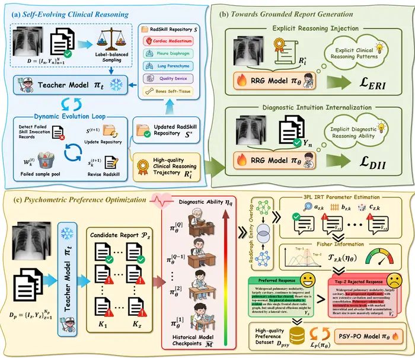
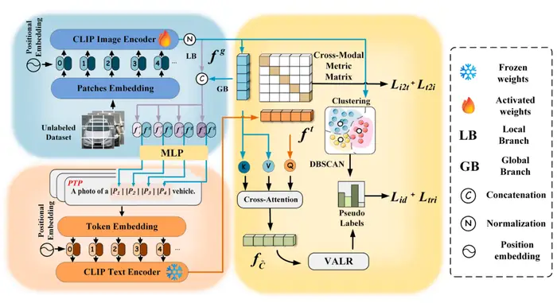
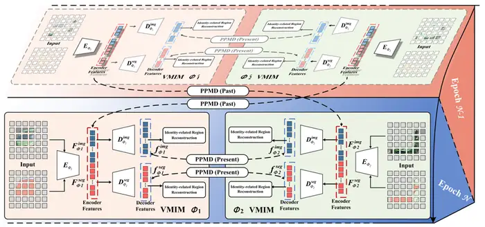
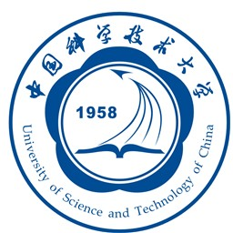
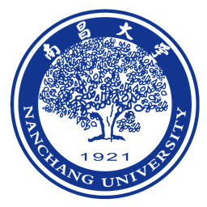

One paper was accepted by NeurIPS 2026.
Hello, I’m Zeyu.
About Me
I am Zeyu Zhang (张泽渝). My research interests center on Multimodal Large Language Models and Intelligent Agents, with recent work spanning Object Re-ID, Medical Image Analysis, and Multimodal Learning.
My academic path includes the School of Mathematics and Computer Science at Nanchang University and, beginning in September 2026, the University of Science and Technology of China.
News
One paper was accepted by Expert Systems with Applications.
One paper was accepted by Neural Networks.
One paper was accepted by ICCV 2025.
One paper was accepted by IJCNN 2025.
Selected Publications
-

Look Before You Leap: Self-Evolving Clinical Reasoning with Psychometric Preference Optimization for Radiology Report GenerationNeurIPS · 2026 -

CLIP-based Partial-wise Prompt Learning for Unsupervised Vehicle Re-identificationExpert Systems with Applications · 2025 -
WaveNet-SF: A Hybrid Network for Retinal Disease Detection Based on Wavelet Transform in Spatial-Frequency DomainNeural Networks · 2025
-

VehicleMAE: View-asymmetry Mutual Learning for Vehicle Re-identification Pre-training via Masked AutoEncodersICCV · 2025 -
EyeTransGAN: End-to-End Generation of Corneal Fluorescein Staining Images from Anterior Segment Photography with Unsupervised Semantic ConsistencyIJCNN · 2025
For citation details and the complete record, visit my Google Scholar profile →
Education

University of Science and Technology of China
Incoming student
Beginning Sep 2026

Nanchang University
School of Mathematics and Computer Science
Sep 2022 – Jun 2026
Professional Activities
Reviewer
British Machine Vision Conference (BMVC)
Reviewer
International Joint Conference on Neural Networks (IJCNN)
Reviewer
AAAI Conference on Artificial Intelligence
Honors & Awards
National Scholarship
National Third PrizeNational College Students’ Energy Conservation and Emission Reduction Competition
Special Prize Scholarship